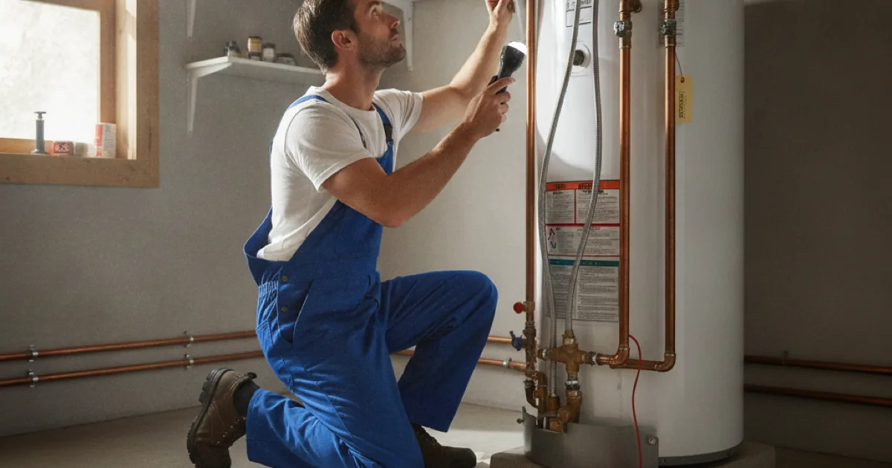

Plumbing Maintenance in Westchester County, NY
Small problems are cheap to fix — until they are not. Dan's Drains provides routine plumbing maintenance that catches leaks, wear, and buildup before they turn into expensive repairs.
- Licensed & Insured
- Same-Day Service Available
- Upfront Pricing
- 15+ Years Local Experience

Need a plumber in Westchester County? We can usually help the same day.
Why Plumbing Maintenance Pays Off
Most expensive plumbing failures start small — a slow leak, a worn valve, sediment in a water heater. Catching these early costs a fraction of the emergency repair and water damage they cause when ignored.
Maintenance is the cheapest insurance in plumbing.
What Maintenance Covers
A maintenance visit typically includes checking for leaks, testing shutoff valves, flushing the water heater to clear sediment, checking water pressure, and looking over drains and fixtures for early wear.
If we find a heater near the end of its life, we will flag it so you can plan a replacement on your schedule rather than in a cold-shower emergency.
Talk to a local Westchester County plumber today.
How Maintenance Works
We go through the system, handle the routine upkeep, and note anything worth addressing now or watching. You get an honest summary and clear priorities, not a list of scare-tactic upsells.
Regular visits build a picture of your plumbing's health over time.
Seasonal Maintenance in Westchester
Our cold winters make fall a smart time to prep pipes against freezing, and hard water in parts of the county makes water heater flushing especially valuable. Seasonal upkeep prevents the most common local failures.
The Family Handyman plumbing maintenance tips are a helpful reference, and we handle the work.
When to Call a Pro
Call us to set up routine maintenance, especially before winter or if your home has older plumbing. Small, regular attention prevents big, sudden bills.
If maintenance turns up a hidden issue, our process for tracking down hidden leaks pinpoints it.
Frequently Asked Questions
How often should I have plumbing maintenance?
For most homes, an annual check is a good baseline, with extra attention before winter. Older homes may benefit from more frequent visits.
What is the most valuable maintenance task?
Flushing the water heater to clear sediment and checking for hidden leaks are two of the highest-value tasks, since both prevent expensive failures.
Can maintenance really prevent big repairs?
Yes. Most costly failures start as small, catchable problems. Regular maintenance finds them early, when the fix is cheap.
Do you flush the water heater during maintenance?
Yes, when appropriate. Flushing removes sediment that hurts efficiency and shortens the heater's life, especially with hard water.
Will you push repairs I don't need?
No. We give you honest priorities and flag only what genuinely needs attention, without scare tactics.
Ready to book? Reach Dan’s Drains for fast, upfront plumbing help.